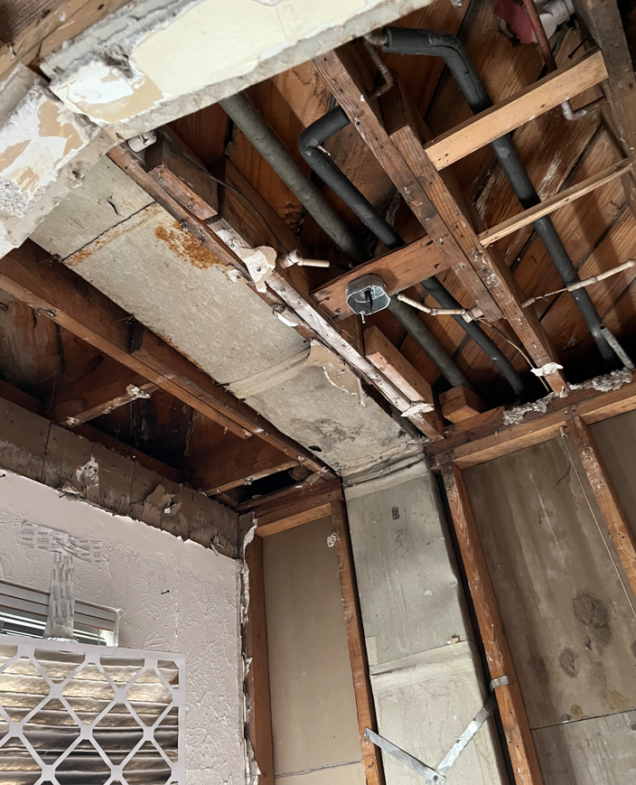
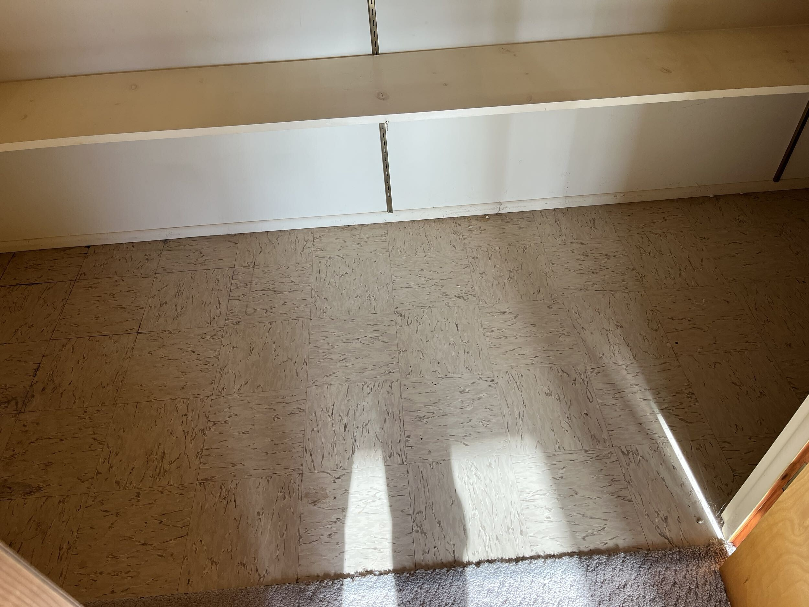
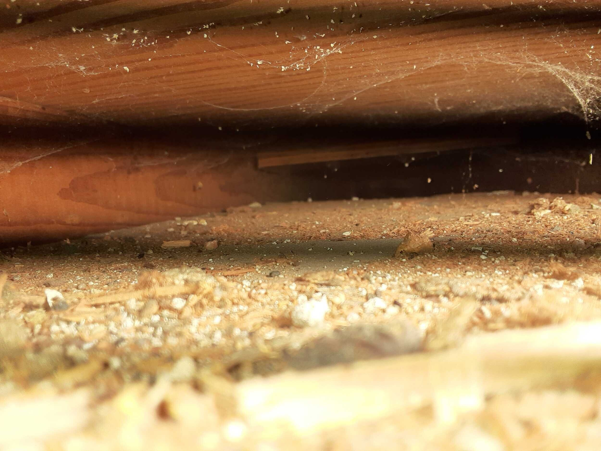
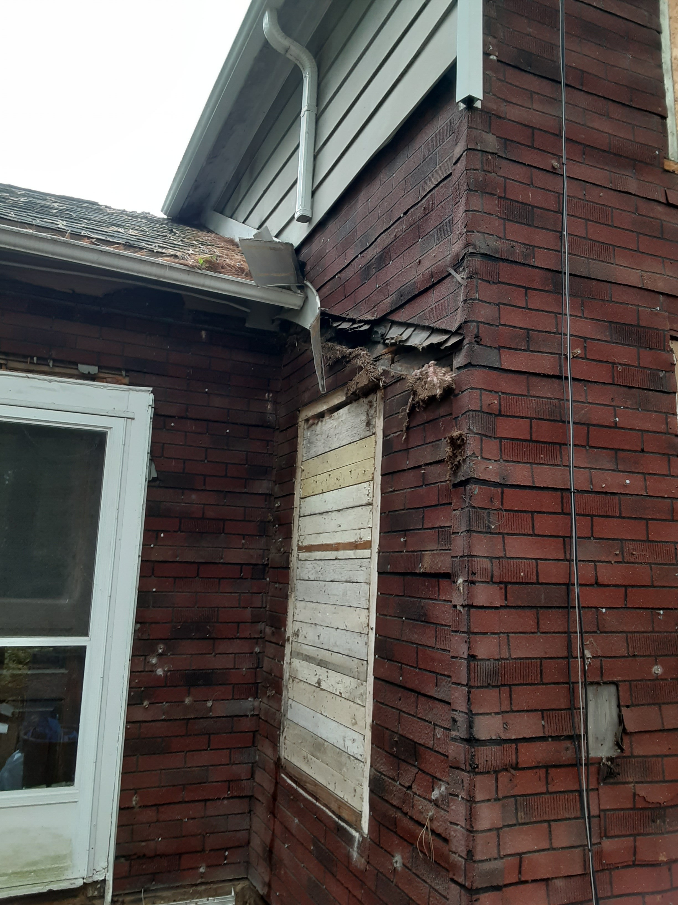

Hazardous Materials
This list is meant to help you identify hazardous materials to keep people safe. It is not a full list and it will NOT equip you to remove or dispose of these materials. Some of these are more dangerous than others, but all should be treated with caution. Work with a professional to keep yourself and others safe.
Asbestos
Asbestos is a hazardous mineral fiber found in older building materials, including insulation, floor tiles, siding, roofing shingles, and cement board products. When disturbed during demolition, asbestos fibers become airborne and can be inhaled, leading to serious health risks such as lung cancer, asbestosis, and mesothelioma.
The only way to know for sure if a material contains asbestos is to take samples to a lab for testing. When you collect samples, collect 2 samples of each material to be tested from different locations. If the lab finds that the first of each type is negative, they will test a second sample to confirm
Duct Wrap
Asbestos duct wrap was commonly used in HVAC (heating, ventilation, and air conditioning) systems in homes and buildings from the early 1900s through the 1980s. It was designed to insulate and fireproof metal ductwork, preventing heat loss and reducing fire hazards. Material Composition: Usually made of woven asbestos cloth or paper, sometimes reinforced with a cement-like coating. Asbestos duct wrap is considered highly friable, meaning it easily crumbles and releases airborne asbestos fibers when disturbed.

Asbestos Floor Tile
Asbestos was commonly used in flooring materials from the early 1900s to the 1980s due to its durability, fire resistance, and insulating properties. It is often found in vinyl tiles, linoleum, and adhesive backing in older homes and commercial buildings. It can be found in 9”x9”, 12”x12”, sometimes 6”x6” tiles. It is also possible in sheet vinyl, like linoleum with asbestos in the felt backing, as well as the black or brown mastic used as an adhesive.

Transite Siding
Transite siding is a type of fiber cement siding that was commonly used in buildings from the 1920s to the 1980s. It was originally manufactured with asbestos to increase durability, fire resistance, and weatherproofing. Over time, many manufacturers transitioned to non-asbestos fiber cement products, but older transite siding still poses a potential asbestos hazard.
Vermiculite
Vermiculite insulation is a lightweight, fire-resistant, and moisture-resistant material commonly used in attics and walls. It looks like small, pebble-like granules that are brown, gold, or silver in color. It was widely used in homes built before the 1990s, especially in attics. While pure vermiculite is not hazardous, a significant portion of vermiculite insulation in U.S. homes came from the Libby, Montana mine, which was heavily contaminated with asbestos. This type of insulation was sold under the brand name Zonolite.

Asbestos Sheet Board
Similar to ¼" hardi backer used today, products containing asbestos were used to fireproof mechanical room ceilings in the 1940s-1960s. These products were sometimes embossed with the brand name and the word asbestos.
Insulbrick
Insulbrick is a type of asphalt-based siding that was popular from the 1920s to the 1960s. It was designed to mimic the look of brick while providing insulation and weather resistance. While Insulbrick itself is not inherently dangerous, older versions may contain asbestos.

Plaster
Asbestos was commonly added to plaster mixes from the 1920s through the 1980s to improve fire resistance, durability, and insulation. It was widely used in walls, ceilings, and decorative finishes in homes, commercial buildings, and industrial facilities.
Lead Paint
Lead, primarily found in paint used before 1978, is another significant hazard in remodeling and demolition. Lead dust or chips can be inhaled or ingested, posing severe health risks, particularly to children and pregnant women. Exposure can lead to neurological damage, developmental delays, and organ damage.
Dust
Construction and demolition dust can pose serious health risks, depending on its composition. Airborne dust contains fine particles, some of which can be toxic or hazardous when inhaled over time. This includes
- Silica dust from concrete, brick, stone, and tile
- Drywall dust
- Wood dust
- Fiberglass/mineral dust from insulation
Tips for dealing with these materials
Testing is the first step in many cases. Test for lead paint with an “at home” test kit. Test for asbestos by contacting a local lab and discussing their process. Some will test samples that you bring them, others may want to collect the samples themselves. There are also companies that will test and mitigate for you. If you are in over your head ALWAYS call for an expert to help.
If you must remove a potentially hazardous or dusty material follow these guidelines
- Remove anything from the area that isn’t harmful first
- Cover all surfaces that are not being removed
-
Protect yourself by
- Wearing a disposable Tyvek suit
- Wear an N95 or (better) P100 respirator
- Wear rubber gloves underneath nitrile coated woven gloves
- Wear a face shield or eye protection
-
Do not create dust
- Work wet
- Wet any surfaces that may produce dust
- Do not saw
- Do not grind
- Do not sweep (vacuum instead)
-
Clean with the proper tools
- Use a hepa rated shop vac with a hepa filter and filter bag
- Use a hepa rated air scrubber ducted outside of the work area to create negative pressure to contain dust
- Bag all debris
- Gooseneck bags and tape shut
Last revised 01/04/2026